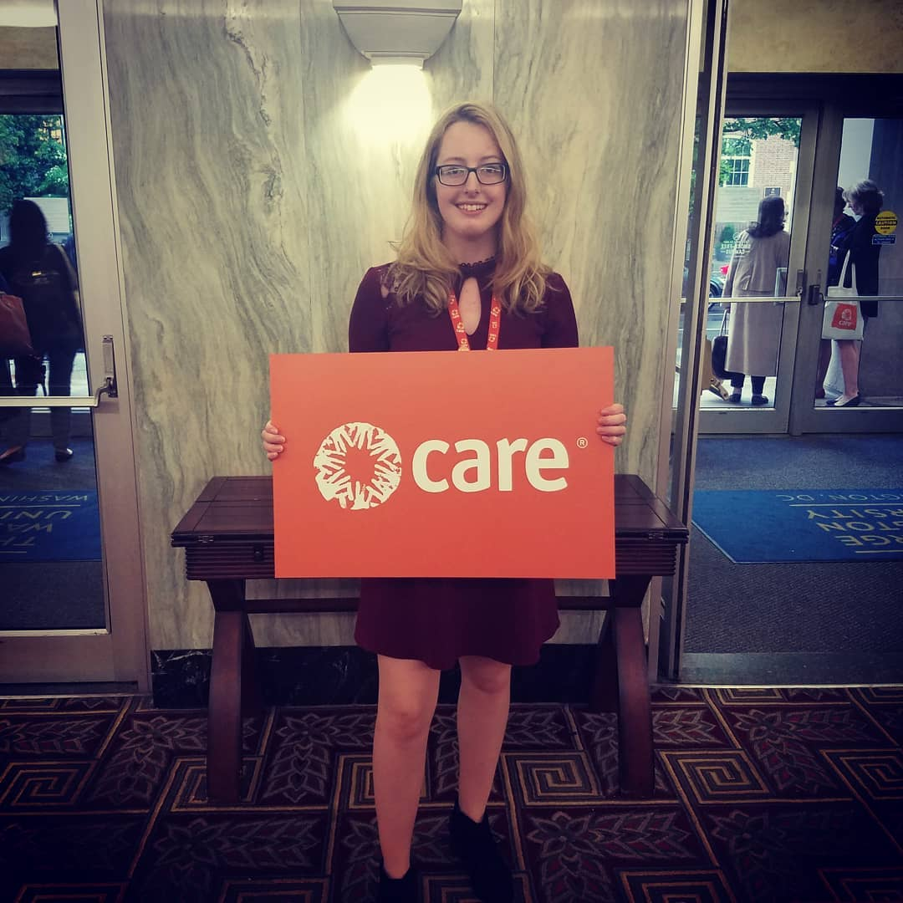

Economic Development Corporation - Grand Traverse Resort and Casinos, Traverse City - IT Intern
June 2017 - August 2018
I began working for Grand Traverse Resort and Casinos (GTRC) as an IT Intern in June of 2017, and left the organization to attend the University of Michigan in the fall of 2018. With GTRC, a large portion of my job was to provide level 1 support to end-users. This included answering help-desk calls, creating and responding to help-desk tickets, troubleshooting basic computer hardware, software, printer problems, and unlocking accounts and resetting passwords in Microsoft Active Directory and IBM iSeries. In addition to providing level 1 support, I worked under our network administrator to implement company-wide projects. I made a significant contribution to a large project that deployed centralized print services to 930 PCs for 100 printers. A part of that project included auditing every machine on the domain for unsupported software and verifying the status of installed applications. I was also able to receive training on the creation of group policies and OUs in Microsoft Active Directory during this project. For another project, I assisted the telecommunications team in upgrading the phone system from Nortel CS1000 to the Avaya IPOffice. My contributions included flashing the firmware of the phones, installing and setting up the phones, and providing training to users to operate new features of the phone.
CARE Action!
Novermber 2017 - Present
I am a volunteer advocate for CARE Action! During my time with CARE, I have conducted meetings with representatives and senators from Michigan in-district and in Washington DC to advocate for USAID funding, the Global Food Security Act, and the International Violence Against Women Act.
Northwestern Michigan College, Traverse City - Office Assistant
August 2014 - August 2015
While working at Northwestern Michigan College’s (NMC) Foundation, I made solicitation calls, and calls to thank donors for their contributions. I would make these phone calls on a consistent basis to build rapport with donors. I also used these communication skills in person at some of the events that I worked at, such as NMC’s scholarship luncheon. At the luncheon, I lead students and donors to different activities, managed their involvement with the activities on social media, and connected with students and donors. In my everyday work environment at NMC’s Foundation, I did not simply work under one superior. Instead, I helped the entire team, taking projects from multiple superiors. This environment helped build my communication skills and work effectively and efficiently in a team. This job required professionalism, and pleasant communication with others.